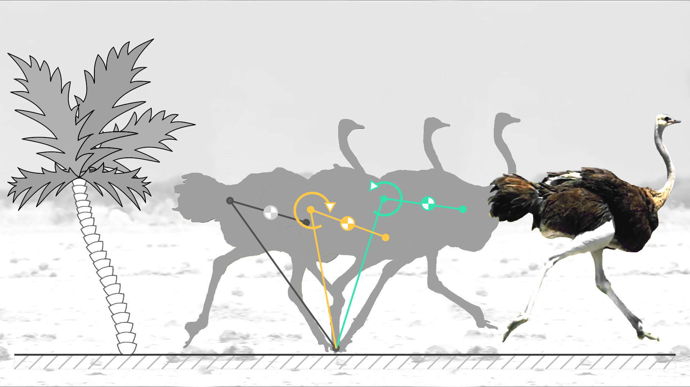

Project Overview
This project focuses on the development of a bipedal robot using a 5-bar linkage mechanism. Inspired by the biomechanics of bird locomotion, the robot mimics natural gait patterns such as walking and hopping.  Using a five-bar linkage system leveraging the foldable mechanism, the biomimicry of an ostrich's legs mimics the intricate, multi-joint motions of real limbs, offering important insights into bipedal biomechanics. This design makes smoother and more flexible motion possible in robotic applications, which captures the kinematics and dynamics of different gaits. Biped biomechanism has been a hot research topic for decades thanks to its adaptability and low energy required to walk and get higher mobility. This project aims to study, develop, and mimic bipedal gait using foldable robotic techniques to further the utility and understanding of the nuances of foldable mechanisms’ structural rigidity and the flexibility of joints and links.
Objectives
- Analyze and replicate bird-like gaits using foldable mechanisms.
- Simulate kinematics and dynamics using MuJoCo.
- Optimize end-effector link length for efficient locomotion.
- Build a bipedal robot.
- Compare and validate the simulation results with prototype performance.
Methodology
- Design a foldable 5-bar mechanism for the bipedal robot.
- Conduct simulations in MuJoCo to generate and analyze gait patterns.
- Fabricate a robot body using lightweight materials like fiberglass.
- Control the robot using servo motors and a microcontroller.
Kinematic Analysis
The legs of this robot are designed based on a five-bar linkage mechanism. Because the device is essentially a planar five-bar linkage with one link extended, it has two degrees of freedom.
It also has two motors, which drive the upper two angles of the device. Choosing arbitrary length for the links, the kinematics of the mechanism is as shown in the figure below.
 Two positional arguements are given to verify the kinematic linkages of the five bar mechanism as shown in the figure below. This validates the mechanism and the effect of input joint angles to the end effector position.
Two positional arguements are given to verify the kinematic linkages of the five bar mechanism as shown in the figure below. This validates the mechanism and the effect of input joint angles to the end effector position.

Simulation study
Using MuJoCo, the five bar mechanism based bipedal robot was simulated. First, the xml template was created which takes the variables robot support height, joint angles and end effector lengths as input arguements.
The support height helps in suspending robot at different heights using a prismatic joint (this joint helps the robot to move in one axis) to enable static or dynamic simulation to study the end effector position, this inturn helps in studying the effect of end effector length on the gait trajectory
The end effector angles is a primary variable that is being optimized as a goal of this project, the xml template takes end effector length as variable and converts accordingly to fit the joint definitions within the xml.
The simulation setup is as shown in figure below.

Four input angles, two for each leg are to be controlled using motors defined within the xml template. The angles are generated to simulate a walking trajectory as shown in the figure for one leg. These angles are again implemented in the other leg with appropriate phase difference.

Static Simulation:
First, a static simulation was carried to track the end effector trajectory and gait cycle generated using the input angles. For this, the robot is suspended at a height where feet doesn't touch the floor which disables the robot movement along the axis. The statis simulation can be viewed below, from the animation, it can be seen that all joints and angles are very well defined.

Team Members
- Jahnav Rokalaboina
- Kunal Palasdeokar
- Nihar Masurkar